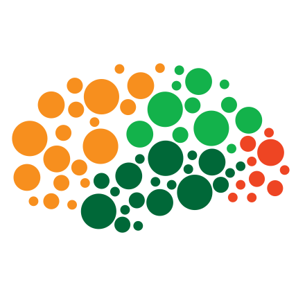

My research plan is centered on the intersection of Machine Learning and Computational Social Science. Specifically, we aim to elucidate the intricate relationship between social and cultural diversity and toxic behavior exhibited in social media platforms.
Experience
As a member of the Artificial Intelligence Laboratory, my research centers on unraveling the intricacies of natural language through the application of machine learning techniques to spoken data. This entails delving into the dynamics of conversation flow (turn-taking), uncovering recurring themes (topic modeling), and crafting advanced systems to enhance interaction (dialogue systems).
As an undergraduate Teaching Assistant in the Faculty of Exact and Natural Sciences at UBA for the "Introduction to Informatics" course, I took on a range of responsibilities. These included leading the planning and design of lessons, carefully selecting exercises for the course guide and exams, and offering valuable support in the lab by promptly addressing questions and ensuring clarity on key concepts.
Articles
Online platforms host a diverse user base, which can be broadly categorized into "specialist users" with focused interests and "generalist users" who...
Vol. 9 Núm. 1 (2023): AGRANDA 2023 - Simposio Argentino de Ciencia de Datos y GRANdes DAtos
Quantifying Cultural Diversity in Social Networks: A Community Embedding Approach.
Defining Diversity Measures through Graph and Machine Learning Techniques.
Vol. 8 Núm. 1 (2022): AGRANDA 2022 - Simposio Argentino de Ciencia de Datos y GRANdes DAtos
Toxicity, polarizations and cultural diversity in social networks
Using machine learning and natural language processing to analyze these phenomena in social networks.
Side Hustles
Deep Learning resources
Repository brimming with deep learning resources, invaluable bibliographies, curated notes, engaging exercises, and much more..

Replication Resources for 'Parsing a Cognitive Task: A Characterization of the Mind's Bottleneck' Study
This repository hosts resources for replicating the paper by Mariano Sigman and Stanislas Dehaene titled 'Parsing a Cognitive Task: A Characterization of the Mind's Bottleneck.' It comprises the source code for the experiment's webpage and data analysis tools.
A Passion for Unraveling Complex Puzzles
Ever since I started exploring the vast world of social media data, I’ve been hooked on the idea of complex systems. It's amazing how simple interactions between people online can evolve into massive, interconnected networks, each with its own unique patterns and behaviors. To me, these systems are like giant puzzles waiting to be solved, and every time I uncover a new piece, I’m filled with excitement and curiosity. Working with these intricate networks has shown me how we can take basic hypotheses and turn them into detailed models that reveal deep insights about human behavior and societal trends. It’s like watching a small ripple in a pond grow into a series of waves, each one telling a new story. This fascination with complexity keeps me driven and eager to dive deeper into the world of research.
The Magic of Statistical Tools
I’ve always been captivated by the power of statistics. These tools are like the wizards of the data world, transforming raw numbers into clear, insightful stories. Whether I’m testing hypotheses or building models, I’m constantly amazed at how statistics help us make sense of the complex world around us. Learning and using statistical methods has been a thrilling journey for me. They’re not just about crunching numbers—they’re about uncovering the hidden patterns and truths within data. I’m dedicated to mastering these tools because I believe they’re the foundation for any serious academic work and essential for making real-world impacts.
Exploring New Fields and Ideas
I’ve never been one to stay within the boundaries of a single field. My interests are like a river that flows through different landscapes, from blockchain technology to neuroscience. This diverse exploration has solidified my belief that computer science is like an “octopus,” with its tentacles reaching into various fields and connecting them in fascinating ways. I’m always eager to jump into new subjects and explore uncharted territories. This curiosity has led me to take on projects that stretch my understanding and broaden my horizons. I’m particularly excited about the intersections where different disciplines meet, as they often spark the most innovative ideas and solutions.
Loving New Experiences and Different Perspectives
One of the things I love most about my journey is meeting new people and immersing myself in different environments. I thrive on collaborating with folks from all walks of life, and I find that these diverse interactions lead to the richest insights and the most rewarding experiences. I’m known for being a good listener and a thoughtful collaborator. I enjoy hearing other people’s ideas and finding ways to build on them. Adaptability and openness are key traits I bring to any team, and I’m always excited to contribute to new projects and learn from those around me.
Committed to Research and Continuous Learning
Over the past three years, my time in undergraduate research has been incredibly fulfilling. I’ve learned the importance of self-driven learning, the joy of discovering new insights, and the value of sharing those insights with others. Balancing my independent research with regular guidance from mentors has taught me how to stay focused and productive while advancing my work. I’m deeply committed to continuing this journey of discovery. The thrill of finding new knowledge and the satisfaction of contributing to our collective understanding are what keep me motivated. I’m eager to further develop my research skills and make meaningful contributions to the academic community.
Excited to Work with Inspiring Mentors
As I look ahead to my Ph.D. journey, I’m keen to find mentors who share my enthusiasm for complex systems and statistical analysis. I believe that under the guidance of experienced scholars, I can make significant contributions to their research and continue to grow as a researcher. I’m looking forward to collaborating with mentors who inspire me, learning from their expertise, and bringing my unique perspective to their work. Together, I’m confident we can explore new horizons and make exciting advancements in our understanding of the world. Thank you for taking the time to read about my journey and aspirations. I’m excited about the future and the opportunity to dive deeper into the fascinating world of research.